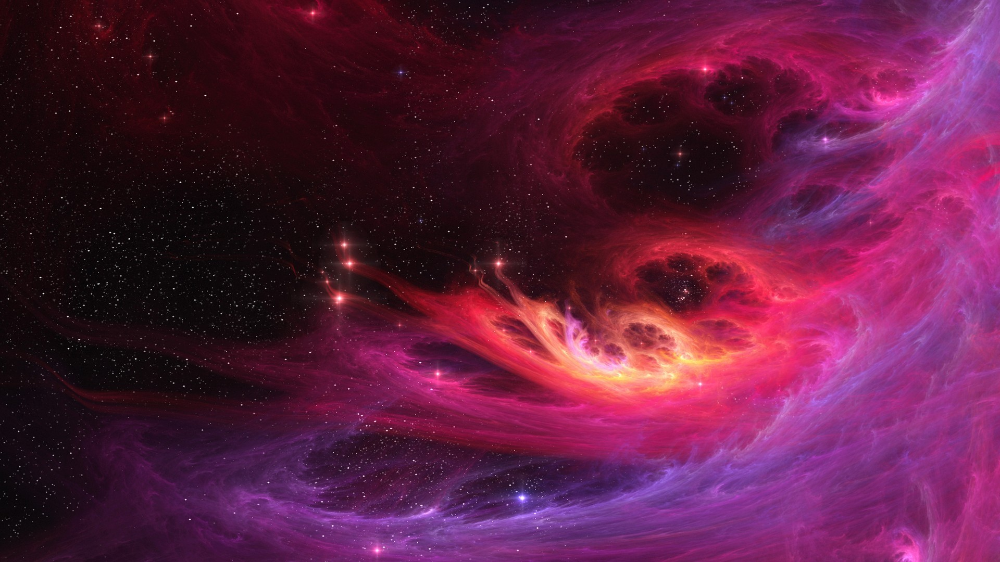

Бескрайние просторы космоса потрясают своим великолепием.
Уже в начале XX века было известно, что звёзды группируются в звёздные скопления, которые, в свою очередь, образуют галактики. Позже были найдены скопления галактик и сверхскопления галактик. Сверхскопление — самый большой тип объединения галактик, включает в себя тысячи галактик[3]. Форма таких скоплений может быть различна: от цепочки, такой как цепочка Маркаряна, до стен, как великая стена Слоуна. Разумно было бы предположить, что эта иерархия распространяется дальше на сколь угодно много уровней, но в 1990-е Маргарет Геллер и Джон Хукра выяснили, что на масштабах порядка 300 мегапарсек Вселенная практически однородна[4] и представляет собой совокупность нитевидных скоплений галактик, разделённых областями, в которых практически нет светящейся материи. Эти области (пустоты, войды, англ. voids) имеют размер порядка сотни мегапарсек. Чудеснейшая картина!
В настоящее время существует ряд не до конца проверенных фактов и интерпретаций, ставящих стандартную космологическую модель под сомнение: